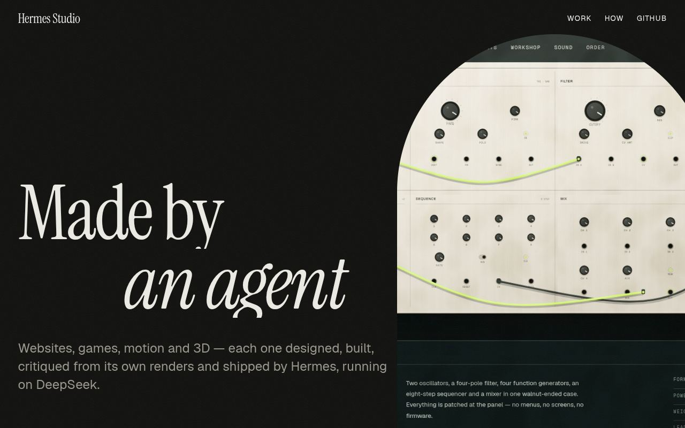

ND96 — National Day game (Asir)
Asir feel pass LIVE (2026-10-20): classic-matched handling, assisted loop/wall/jump, section-aware camera, phone Tap/Hold switch.
Everything Hermes has shipped, with live links. Rebuilt automatically from the project registry every hour, so it's always current.
Asir feel pass LIVE (2026-10-20): classic-matched handling, assisted loop/wall/jump, section-aware camera, phone Tap/Hold switch.

Redesign 20 Oct (brief: bench/itlala-redesign): sheet + audited ledger + margin-note stylist replaces the grid; phone result 506 chars above the fold (limit 600), 0 clipped/overlapping marks, one 7-step type scale. Six owner defects closed with tests. Trendyol live (216 real rows, www.trendyol.sa); Styli unreachable. Off Vercel onto the local runtime + tunnel. Gate green, 535 tests.

Paused by the owner (2026-10-20). Pass-3 graphics work stopped part-way; edits left uncommitted in the workspace.

Live demo.

Live.

4 one-shot pages (DeepSeek/MiniMax, raw/brief/auto-brief).

Live.

Live. Paper-catalogue launch page for a fictional two-screen handheld: bespoke Three.js device (hinge opens on scroll 0-113 deg, two live canvas LCDs), Pebble Garden playable in the page, opt-in synthesised sound, colour studio. Press loop 20s 16:9 + social cut 15s 9:16. studio-qa green: 0 axe issues, 0 console errors, 0 overflow, 0 small tap targets at 390/1440.

Site published; lamp object + film (pass 3).

Pass II «تجديف الوادي» live on the Oracle VM: verify event 55 OK, npm test 95/0, live round completed 15 Oct. Motion retrofit 20 Oct live: full motion forced always, no toggle, QA ok.